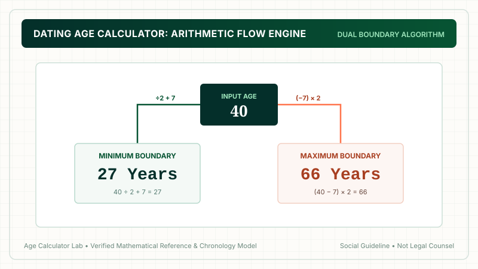
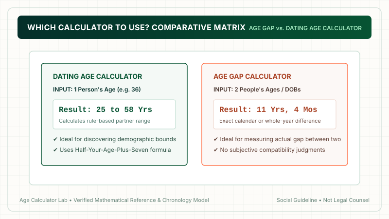

A dating age calculator takes one person's age and computes an acceptable partner age bracket using two formulas: Minimum Age = (Age ÷ 2) + 7, and Maximum Age = (Age − 7) × 2. For example, a 36-year-old receives a dating range of 25 to 58 years old. Try our verified Dating Age Calculator to find your specific range instantly.
1. What Is a Dating Age Calculator?
A dating age calculator (often called a dating age rule calculator or dating age range calculator) is an automated computational tool designed to answer a common question: "What is the socially conventional age range for someone my age to date?"
Instead of requiring you to perform manual division and algebra, the calculator automates the traditional half-your-age-plus-seven rule. By inputting your current age, the tool instantly calculates your lower boundary, upper boundary, and the total allowable age gap.
2. The Underlying Mathematics: Dual-Boundary System
A complete dating age calculator operates on a dual-boundary algorithm. Rather than providing only a minimum limit, it computes both sides of the demographic spectrum to establish a symmetric, reciprocal dating bracket.

3. How to Calculate the Minimum Dating Age
The lower bound is determined by the classic equation:
Minimum Dating Age Formula
This sets the youngest age a person can date while adhering to the traditional social convention.
4. How to Calculate the Maximum Dating Age
The upper bound is derived by inverting the minimum rule algebraically:
Maximum Dating Age Formula
Because relationship rules must be reciprocal, if someone older dates you, you must simultaneously satisfy their minimum rule. For a full algebraic proof, see our guide on the half-your-age-plus-seven formula.
5. Step-by-Step Worked Example (Age 36)
Let's trace how the calculator evaluates an input age of 36:
- Step 1: Calculate Minimum Bound
Divide by 2:36 ÷ 2 = 18
Add 7:18 + 7 = 25
➔ Lower Bound: 25 years old (a gap of 11 years younger). - Step 2: Calculate Maximum Bound
Subtract 7:36 − 7 = 29
Multiply by 2:29 × 2 = 58
➔ Upper Bound: 58 years old (a gap of 22 years older). - Step 3: Combine Range
➔ Final Dating Range: 25 to 58 years old.
6. Complete Reference Chart
Here is how the dating age calculator processes ages across adulthood:
| Your Age | Minimum Partner Age | Maximum Partner Age | Calculated Dating Bracket |
|---|---|---|---|
| 20 | 18* (Adult Floor) | 26 | 18 to 26 years old |
| 24 | 19 | 34 | 19 to 34 years old |
| 28 | 21 | 42 | 21 to 42 years old |
| 32 | 23 | 50 | 23 to 50 years old |
| 36 | 25 | 58 | 25 to 58 years old |
| 40 | 27 | 66 | 27 to 66 years old |
| 45 | 29.5 (30) | 76 | 30 to 76 years old |
| 50 | 32 | 86 | 32 to 86 years old |
| 55 | 34.5 (35) | 96 | 35 to 96 years old |
| 60 | 37 | 106 | 37 to 106 years old |
7. Using the Interactive Tool on Age Calculator Lab
Using our Dating Age Calculator takes seconds:
- Type your current age into the interactive input field.
- The calculator immediately generates your minimum bound, maximum bound, and visual span.
- Review contextual demographic notes explaining the life-stage implications of your range.

8. Decimal Outputs and Rounding Conventions
When an odd number is entered into the formula, the division yields a half year (e.g., 35 ÷ 2 + 7 = 24.5). How should you interpret decimals?
- Literal Interpretation: 24.5 represents 24 years and 6 months. Someone who is 24 years and 7 months old falls inside the rule!
- Conservative Rounding: Round up to 25 to ensure the partner is solidly within the boundary.
9. Why Dating Age Differs from Simple Age Gaps
Don't confuse a dating age calculator with an age gap calculator:
- Age Gap Calculator: Compares two specific people to find the numerical difference (e.g., 40 − 30 = 10 years).
- Dating Age Calculator: Takes only one person's age to project their full theoretical dating boundary.
10. Social Perception vs Demographic Realities
While the calculator allows wide age brackets—such as a 40-year-old dating up to 66—sociological census data indicates that over 80% of married couples are within 5 years of each other. The formula describes the outer edges of conventional social acceptance, not the statistical average.
11. Critical Safety Guardrail: Statutory Adult Limit
For individuals between ages 18 and 21, the mathematical formula yields outputs below 18 (e.g., 18 ÷ 2 + 7 = 16). In our tools, we strictly enforce an Adult Majority Floor of 18. Mathematical formulas must never be used to legitimize relationships involving minors under the age of majority.
10. Interpreting Your Dating Age Calculator Results
When you input your age into the dating age calculator and receive a numerical bracket—such as 27 to 66 for a 40-year-old—what does that result actually signify in the real world? It is critical to interpret these figures with psychological, demographic, and practical maturity.
First and foremost, the output defines the outer theoretical boundaries of conventional social acceptability according to a 19th-century mathematical heuristic. It does not suggest that you should immediately seek out partners at the extreme edges of that bracket. Most individuals find their deepest relational satisfaction within much narrower demographic bands—typically within 3 to 6 years of their own chronological age.
The lower boundary (27 in our example) marks the point below which societal observers traditionally begin to perceive a generational or life-stage divide. The upper boundary (66) marks the reciprocal limit where you would represent the younger partner's lower boundary. Between these two numbers lies an expansive 39-year window. Within that window, the mathematical formula remains completely agnostic: it treats a 5-year gap, a 12-year gap, and a 25-year gap with identical neutrality.
11. Is the Dating Age Formula Scientifically Validated?
A frequent question among dating app users and relationship researchers is whether the half-your-age-plus-seven rule holds any empirical scientific validity. Can an equation created over a century ago accurately reflect modern neurological, psychological, and relational realities?
The short answer from contemporary relationship science is no. Peer-reviewed studies conducted by sociologists and behavioral economists—such as researchers at Emory University and the Max Planck Institute for Demographic Research—have examined thousands of couples to determine whether adherence to the half-your-age-plus-seven rule correlates with relationship longevity, marital satisfaction, or lower divorce rates.
Their findings consistently demonstrate that relational health depends on interpersonal alignment rather than arithmetic formulas. The key predictors of long-term partnership success include:
- Emotional Maturity & Conflict Resolution: How partners communicate during stress, resolve disagreements, and regulate emotions.
- Financial & Career Synchronization: Compatible spending habits, debt management, and aligned expectations around career ambitions.
- Family & Parenting Timelines: Mutual clarity regarding having children, raising dependents, or caring for aging parents.
- Shared Core Values: Ethical, political, spiritual, and lifestyle philosophies that form the bedrock of daily life.
None of these critical psychological variables can be measured by dividing an age by two and adding seven. The calculator serves as a demographic conversation starter and cultural curiosity, not a scientific matchmaking algorithm.
12. Crucial Legal Distinctions & Age of Majority
It is impossible to discuss dating age calculators without establishing absolute legal boundaries. In human culture, social conventions and statutory laws occupy completely different spheres:
- Social Conventions: Informal, unwritten folk rules (like the dating age rule) that evolve over decades and vary by culture. They carry zero legal weight and cannot be enforced by any court of law.
- Statutory Laws: Binding penal codes and civil statutes enacted by governments. These establish the legal age of majority (typically 18 in most democratic nations) and the age of consent (which varies between 16 and 18 depending on jurisdiction).
Under no circumstances can a mathematical rule of thumb be used to justify or excuse an illegal relationship involving a minor. If an adult uses a calculator that outputs a number below 18, the legal majority statute instantly and unconditionally overrides the formula. On Age Calculator Lab, our editorial standards and calculation engines apply an absolute adult floor at age 18.
13. The Five Major Limitations of Age Calculators
When relying on any automated dating age tool, keep these five structural limitations in mind:
- Linear Bias: The formula increases the allowable gap strictly in linear increments of 0.5 years per chronological year. Human life stages, however, do not progress in smooth linear increments.
- Arbitrary Constant: The number 7 was chosen as an aesthetically pleasing constant in 19th-century French literature. It possesses no biological or psychological justification.
- Gender Neutrality vs Historical Context: Originally designed as an asymmetric matrimonial guide for older men marrying younger women, modern users apply it symmetrically across all genders, which changes the cultural dynamics.
- Omission of Life Stage Realities: A 35-year-old dating a 25-year-old involves one person establishing mid-career stability while the other is navigating entry-level adulthood, despite falling well within the formula's boundaries.
- Absence of Geographic Nuance: Marriage patterns, age-at-first-marriage statistics, and cultural norms vary dramatically between countries and regions.
12. Frequently Asked Questions
What does a dating age calculator do?
A dating age calculator computes the suggested lower and upper age boundaries for a romantic partner based on the half-your-age-plus-seven social formula, outputting a complete acceptable age bracket.
What is the formula behind the dating age calculator?
The calculator uses two reciprocal equations: Minimum Age = (Your Age ÷ 2) + 7, and Maximum Age = (Your Age − 7) × 2.
How does the calculator handle odd numbers?
When dividing an odd age by 2 (such as 35 ÷ 2 = 17.5), adding 7 yields a half-year result (24.5). The calculator displays the exact decimal and conventionally rounds to the nearest completed year.
Is the output of a dating age calculator legally binding?
No. The calculator is an educational demographic model. Statutory laws regarding the age of majority (18+) strictly override all mathematical results.
Why can an older person date someone much younger according to the calculator?
Because the formula scales with age. Life stages in mature adulthood (40s, 50s, 60s) are more homogeneous than during adolescent or early-twenties brain development.
What is the dating range for someone who is 36?
For age 36: Minimum is 36 ÷ 2 + 7 = 25 years old. Maximum is (36 − 7) × 2 = 58 years old. The dating range is 25 to 58 years old.
Does the calculator tell me who I will be compatible with?
No. A calculator only evaluates chronological boundaries. Real-world compatibility depends on shared values, communication, respect, and emotional maturity.
Where can I use the interactive calculator?
You can use our verified Dating Age Calculator directly for instant results with no registration required.
13. Final Takeaway
A dating age calculator provides a quick, transparent mathematical view of traditional age-gap conventions. Use it as a fun, interesting demographic benchmark—remembering always that real relationships thrive on personal compatibility, shared life goals, and mutual respect.

Methodology & Verification Standards
- Calculation Engine: Dual-bound half-your-age-plus-seven algorithm.
- Formulas:
Min = (Age/2) + 7|Max = (Age - 7) * 2. - Safety Rule: Absolute adulthood floor enforced at age 18.
- Review Date: October 2026.